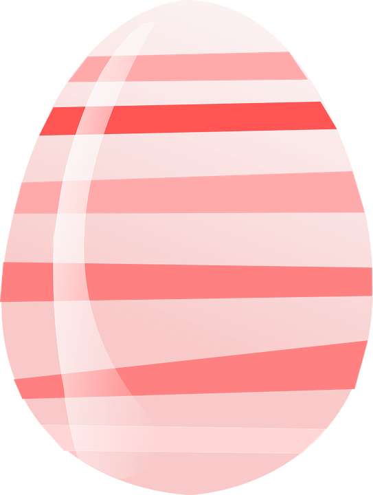
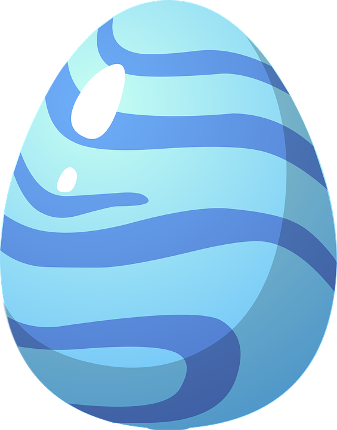

<!--
  Generated template for the Start page.

  See http://ionicframework.com/docs/components/#navigation for more info on
  Ionic pages and navigation.
-->
<ion-header>

  <ion-navbar color="peach" text-center>
    <ion-title>Start</ion-title>
  </ion-navbar>

</ion-header>


<ion-content padding>

<ion-item text-center no-lines>
  <br> <br> <br> <br> <br>Pick your egg <br> <br> 
</ion-item>
<ion-item no-lines>
  
<ion-grid text-center>
  <ion-row padding >
    <ion-col padding (click)="petClick('orange'); orange=true; blue=false" [ngClass]="{'borderclass': orange, 'padding': true }"> 
       
    </ion-col> 
    <ion-col padding (click)="petClick('blue'); blue=true; orange=false" [ngClass]="{'borderclass': blue , 'padding': true}"> 
       
    </ion-col>
  </ion-row>
</ion-grid>

</ion-item>
<ion-item no-lines text-center>
  What's the little guy's name?
</ion-item>


  <form #petForm="ngForm" (ngSubmit)="startForm(petForm)"  novalidate>
      <ion-item>
        <ion-input type="text" [(ngModel)]="pet.name" name="title" required placeholder="enter name"></ion-input>
      </ion-item>
      <button ion-button type="submit" block color="peach">Begin</button>
  </form>    

</ion-content>


